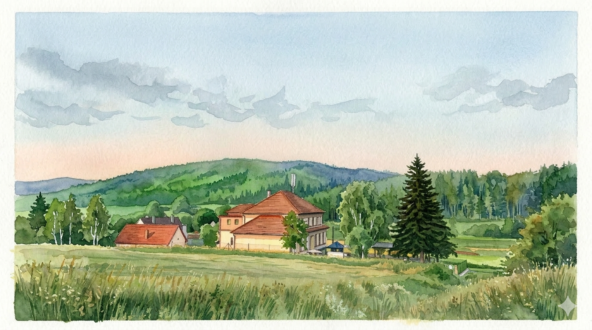

4. — 6. září 2026
Turistická ubytovna Podmokly, Sušice
Potvrdit účastVymýšleli jsme svatbu, která odráží co nás baví, co máme rádi a jak chceme trávit čas s našimi blízkými. A tak je ze svatby nakonec oslava, bez formalit a bez stresu.
Budeme rádi, když přijedete, a strávíte s námi čas v přírodě, s dobrým jídlem, pitím a pohodou. Kdo bude chtít, může nám pomoct s přípravami, vydat se na výlet do okolí, nebo si jen tak užít čas s ostatními.
Víc než svatba to tak je víkend s lidmi, které máme rádi a takových víkendů není nikdy dost...

Neboli harmonogram, ale s menší nadějí na dodržení časů.
Pátek je pro ty, kteří nám přijedou pomoct připravit to nejnutnější na sobotu. No a nebo i pro ty, co si prostě jen chtějí v klidu sednout u ohně, něco si opéct a ozkoušet před sobotou teplotu piva.
Zatímco budeme vyndavat stoly a narážet pivo, budeme rádi, když vyrazíte do okolí! Tady jsou 4 nápady, jak strávit dopoledne:
Pěší trasa 10 km.
Cca 40km po Šumavě.
Krátký okruh s dětmi.
Brunch a pohoda v Sušici.
Zaparkovat můžete na místě - od pátečního večera - samozřejmě kdykoliv.
Čas se převléknout do svátečního (outdoor) a dát si drink před obřadem.
Řekneme si Ano někde mezi stromy.
Jídlo formou DIY bufetu, naražené sudy, kytary, tanec a volná zábava.
Snídaně ze zbytků, silné kafe, společný úklid ubytovny a hromadné loučení. Do oběda musíme vyklidit pole.
Spaní je v dostatečném množství zajištěno na Tuistické ubytovně. Sociálky jsou společné na patře, ale hlavní zpráva je, že se všichni krásně vejdeme pod jednu střechu!
V ubytovně je dostatek místa a pro každého máme garantovanou postel. Počítejte ale s tím, že na pokoji nebudete spát sami, ale pěkně komunitně se spřízněnými dušemi.
Rozdělení do pokojů doladíme před svatbou tak, aby byly rodiny a správné party pohromadě.
Místo na posteli sice máte jisté, ale chápeme, že někdo se raději nemačká na společném pokoji a ocení své vlastní soukromí a naprostý klid.
Kolem ubytovny je louka jako stvořená pro stany a dodávky. Pokud preferujete spaní venku ve svém vlastním, určitě si ho můžete přivézt!
* Samozřejmě je také naprosto v pořádku přijet jen na sobotu a večer odjet domů.
Zahoďte obleky a upnuté šaty. Náš dresscode je Sportovní elegance / Český outdoor.
Na obřad si vezměte to, v čem se cítíte hezky (lněnou košili, letní šaty, chinos kalhoty), ale nezapomeňte, že jsme v lese a hlavní je pohodlí. Jehly nechte doma, zapadly byste do hlíny. Večer u ohně oceníte spíš flanelku než sako.
Cesta od ohně na záchod bývá temná.
Večery a rána na Šumavě umí pořádně kousat, mikina se neztratí.
Komáři se neberou, ale žerou.
Do stanu nutnost, ale i na palandu se pro jistotu může hodit.
Něco na nedělní ráno, ať je ten úklid snesitelnější.
A chuť zapojit se do komunitního grilování a čepování.
Klikněte na otázku pro zobrazení odpovědi.
Určitě! Svatba je "child-friendly" i "dog-friendly". Jen prosíme, abyste na své ratolesti i mazlíčky dohlédli (hlavně u ohně a v blízkosti grilovaného masa).
Místa je dost. Auta bude možné nechat přímo na přilehlé louce u ubytovny. Jen prosíme o ohleduplnost při parkování, abychom nezablokovali průjezd a nechali místo i pro stany.
Naše domácnost už praská ve švech (a ešusy už máme). Největší radost nám uděláte, když přijedete. Pokud nám i tak chcete něco dát, potěší nás finanční příspěvek na svatební cestu, ať můžeme vyrazit na pořádný trek.
Velmi pravděpodobně bídný, ne-li žádný. A upřímně? Považujeme to za obrovskou výhodu! Užijme si offline víkend.
Prosíme o vyplnění formuláře nejpozději do 31. 5. 2026, abychom věděli, kolik nakoupit piva a buřtů.
Nefunguje to, nic se nad tímhle nezobrazuje?
Otevřít formulář v novém okně